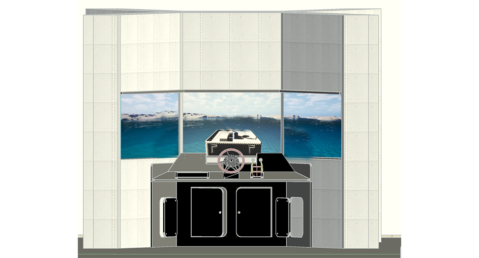

Fig. 00 — Fabrication draft OAC · Detroit, MI
Outdoor Adventure Center · Detroit, MI
Ship's Bridge Simulator
The Outdoor Adventure Center wanted visitors to feel what it takes to steer a real ship. So we're building them a bridge: three screens for windows, a physical wheel and throttle wired through custom sensors, and open water simulated in Unreal Engine — wind, wake, and momentum included. I scoped it, and I'm directing the build.
Sensor input gets filtered and remapped in-engine, so a kid slamming the throttle reads as intent. The sea itself is a real-time water particle system. And because the side screens angle in like a real bridge, it renders through nDisplay — Unreal's way of drawing a correctly-angled view for each screen instead of one stretched image.
Unreal Engine + nDisplay (real-time 3D) · three-screen bridge · custom wheel + throttle sensors